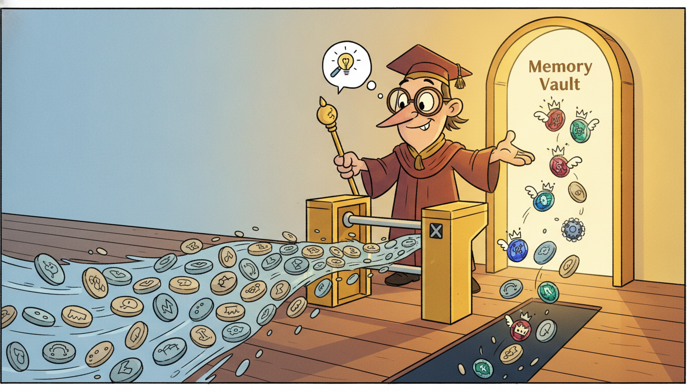

"I used to apply the same fixed rule to every token that walked past me, the way a turnstile counts everyone alike. Then they let me read each token first and decide, on the spot, whether to let it into my memory or wave it through unremembered. I am still a single linear recurrence, still finishing in one sweep down the sequence, but now the sweep has opinions."
A Selective Scan Choosing What to Remember
The structured state-space model of Section 13.1 (S4) buys linear-time long-range modeling by being time-invariant: one fixed pair of dynamics matrices is applied identically to every step, which is exactly what lets the recurrence be rewritten as a single long convolution and computed by an FFT. That same time-invariance is its ceiling: a layer that treats every input the same cannot perform content-based selection, cannot look at a token and decide to remember it, ignore it, or reset its state. Mamba (Gu and Dao, 2023) removes the ceiling by making the state-space parameters $(\boldsymbol{\Delta}, \mathbf{B}, \mathbf{C})$ functions of the current input, recovering the input-dependent gating that made LSTMs and attention powerful, while keeping the linear-in-length cost. The price is that an input-dependent recurrence is no longer a convolution, so the FFT trick dies and a sequential scan returns. Mamba pays that price with a hardware-aware implementation: it casts the recurrence as an associative parallel scan (logarithmic depth, linear work), fuses the whole scan into one GPU kernel, and keeps the large expanded state in fast SRAM, recomputing it in the backward pass rather than writing it to slow HBM. The result trains at convolution-like throughput, runs inference with a constant-size recurrent state (no growing KV cache), and has become a leading backbone for very long time series in 2024 to 2026. This section derives selection from the failure of time-invariance, builds the parallel scan from scratch in PyTorch, runs the official mamba-ssm block, and shows a selective copying task that S4 provably cannot solve.
In Section 13.1 we built the structured state-space model. A continuous linear system $\mathbf{h}'(t) = \mathbf{A}\mathbf{h}(t) + \mathbf{B}x(t)$, $y(t) = \mathbf{C}\mathbf{h}(t)$ was discretized with a step size $\Delta$ into a linear recurrence $\mathbf{h}_t = \bar{\mathbf{A}}\mathbf{h}_{t-1} + \bar{\mathbf{B}}x_t$, $y_t = \mathbf{C}\mathbf{h}_t$, and because $\bar{\mathbf{A}}, \bar{\mathbf{B}}, \mathbf{C}$ were the same at every step, the whole map unrolled into a single convolution $y = \bar{\mathbf{K}} * x$ with a structured kernel that the HiPPO theory made long-range and the FFT made fast. That gave $O(L \log L)$ training and a fixed state at inference. We deferred the question this section answers: a fixed linear filter is, by construction, blind to content. It applies one rule to everything. This section shows what that blindness costs, how to remove it, and what new machinery the removal demands. We use the unified notation of Appendix A: $x_t$ the input, $\mathbf{h}_t$ the latent state, $y_t$ the output, $L$ the sequence length, $N$ the state dimension.
1. The Limitation of S4: Time-Invariant Dynamics Cannot Select Intermediate
The defining property of S4, and the source of both its speed and its limitation, is linear time-invariance (LTI). The discretized matrices $\bar{\mathbf{A}}, \bar{\mathbf{B}}, \mathbf{C}$ do not depend on $t$ and do not depend on the input. The state at time $t$ is therefore a fixed linear function of the entire input history,
$$\mathbf{h}_t = \sum_{k=0}^{t} \bar{\mathbf{A}}^{\,k}\bar{\mathbf{B}}\,x_{t-k}, \qquad y_t = \sum_{k=0}^{t} \underbrace{\mathbf{C}\bar{\mathbf{A}}^{\,k}\bar{\mathbf{B}}}_{\bar{K}_k}\,x_{t-k},$$and the coefficients $\bar{K}_k = \mathbf{C}\bar{\mathbf{A}}^{k}\bar{\mathbf{B}}$ are precisely the convolution kernel from Section 13.1. The kernel is fixed before any data arrives. Every input at lag $k$ is weighted by the same $\bar{K}_k$ regardless of what that input is. This is exactly the property that lets us precompute the kernel once and apply an FFT, and it is exactly the property that makes the model unable to react to content.
Why is that fatal for some tasks? Consider the abstract job a sequence model must do to be useful as memory: read a stream, and based on the value of what it reads, decide whether the current token deserves to be written into the state, whether it should be ignored, or whether the state should be flushed. An LSTM (Chapter 10) does this with input, forget, and output gates whose openings are functions of the current token. Attention (Chapter 12) does it by letting the query and key, both functions of content, decide how much each past token contributes. S4 can do none of it: its "forget gate" $\bar{\mathbf{A}}$ and its "input gate" $\bar{\mathbf{B}}$ are constants. A token carrying a flag that says "remember everything after me" and a token carrying noise are processed by identical dynamics, so the model cannot route them differently. Two canonical synthetic tasks isolate the failure.
- Selective copying. The input is a long sequence of tokens, a few of which are "data" tokens at random positions and the rest are blank filler; the target is to reproduce the data tokens in order at the end. Solving it requires content-dependent spacing: the model must remember tokens at irregular, data-determined positions and ignore the filler between them. An LTI convolution applies a fixed time-lag kernel, so it cannot adapt its memory to where the data tokens happen to fall. S4 fails it.
- Induction heads. Given a pattern and later its prefix, predict the continuation (the in-context "if you saw A then B, and now you see A again, output B" behavior that underlies in-context learning). This too needs the model to recall a specific earlier token conditioned on the current one, a content-based lookup an LTI filter cannot perform.
The lesson generalizes beyond toy tasks. Any time series with event-driven structure, irregular sampling where the gap itself is informative, regime switches that should reset memory, or sparse informative tokens buried in long stretches of routine, asks the model to make content-based memory decisions. S4 forecasts smooth, stationary signals beautifully and stumbles exactly where the interesting temporal information is sparse and irregular. This is the same content-blindness that distinguishes a fixed Kalman filter (Chapter 7) from a learned, input-modulated one, the temporal thread of this book made literal: the classical fixed-dynamics filter returns here as a learned but still fixed-dynamics S4, and the next step is to let the data move the dynamics.
S4 is fast for the same reason it is content-blind. Because $\bar{\mathbf{A}}, \bar{\mathbf{B}}, \mathbf{C}$ do not change with the input, the recurrence collapses into one fixed convolution kernel that an FFT evaluates in $O(L \log L)$. Remove time-invariance, let the matrices depend on $x_t$, and you instantly gain content-based selection (a different rule per token), and you instantly lose the convolution (there is no longer a single kernel to FFT). Selectivity and the FFT are mutually exclusive. The whole engineering problem of Mamba is to recover the speed by a different route, the parallel scan, once the convolution route is closed off by selectivity.
2. Selection: Making the State-Space Parameters Input-Dependent Advanced

The fix is conceptually a single move: promote the constants to functions of the current input. In a selective state-space model the step size and the input and output projections become input-dependent,
$$\boldsymbol{\Delta}_t = \tau_{\Delta}\!\big(\mathbf{s}_{\Delta}(x_t)\big), \qquad \mathbf{B}_t = \mathbf{s}_{B}(x_t), \qquad \mathbf{C}_t = \mathbf{s}_{C}(x_t),$$where each $\mathbf{s}_{\bullet}$ is a learned linear projection of the token $x_t$ and $\tau_{\Delta} = \operatorname{softplus}$ keeps the step positive. The state matrix $\mathbf{A}$ stays a fixed learned parameter (a diagonal or HiPPO-structured matrix as in Section 13.1), but its discretization is now input-dependent because the step $\boldsymbol{\Delta}_t$ is. Discretizing with the same zero-order-hold rule as before but with the per-step $\boldsymbol{\Delta}_t$ gives input-dependent discrete matrices
$$\bar{\mathbf{A}}_t = \exp(\boldsymbol{\Delta}_t \mathbf{A}), \qquad \bar{\mathbf{B}}_t = (\boldsymbol{\Delta}_t \mathbf{A})^{-1}\big(\exp(\boldsymbol{\Delta}_t \mathbf{A}) - \mathbf{I}\big)\,\boldsymbol{\Delta}_t \mathbf{B}_t \;\approx\; \boldsymbol{\Delta}_t \mathbf{B}_t,$$and the recurrence becomes a time-varying linear system
$$\mathbf{h}_t = \bar{\mathbf{A}}_t\,\mathbf{h}_{t-1} + \bar{\mathbf{B}}_t\,x_t, \qquad y_t = \mathbf{C}_t\,\mathbf{h}_t.$$Read what selection bought. The step size $\boldsymbol{\Delta}_t$ behaves as a content-driven gate. When the model reads an important token it can emit a large $\boldsymbol{\Delta}_t$, which makes $\bar{\mathbf{A}}_t = \exp(\boldsymbol{\Delta}_t\mathbf{A})$ small (strong forgetting of the old state) and $\bar{\mathbf{B}}_t \approx \boldsymbol{\Delta}_t\mathbf{B}_t$ large (strong writing of the new input), so the token is decisively written into memory. When it reads filler it can emit $\boldsymbol{\Delta}_t \to 0$, which makes $\bar{\mathbf{A}}_t \to \mathbf{I}$ (perfect retention of the old state) and $\bar{\mathbf{B}}_t \to 0$ (the input is ignored), so the state simply skips past the token unchanged. This is precisely the input-gate / forget-gate behavior of an LSTM, recovered inside a linear state-space recurrence, and it is why the authors call $\boldsymbol{\Delta}$ a generalization of the RNN gate. The model can now adapt its memory to content, the ability subsection one showed S4 lacked.
The cost is structural, and it is the whole reason this section needs new algorithms. Because $\bar{\mathbf{A}}_t, \bar{\mathbf{B}}_t, \mathbf{C}_t$ now vary with $t$, the output is no longer a convolution. Writing it out,
$$y_t = \sum_{k=0}^{t} \mathbf{C}_t\Big(\textstyle\prod_{j=k+1}^{t}\bar{\mathbf{A}}_j\Big)\bar{\mathbf{B}}_k\,x_k,$$the coefficient multiplying $x_k$ depends on $t$ through the whole product $\prod_{j=k+1}^{t}\bar{\mathbf{A}}_j$, so there is no single kernel $\bar{K}_{t-k}$ that depends only on the lag. The Toeplitz structure that made the FFT possible is gone. We are back to a genuine sequential recurrence, $L$ steps each depending on the previous, the exact bottleneck that Section 9.3 identified as the curse of RNNs. To keep the linear-time promise we cannot rely on the convolution view; we need a way to compute a time-varying linear recurrence in parallel. That is the associative parallel scan of subsection three.
There is a small joke buried in the math. For years the discretization step $\Delta$ was treated as a boring numerical hyperparameter, the thing you set small enough for your ODE solver not to blow up, a knob nobody loved. Mamba's central trick is to notice that if you let $\Delta$ depend on the input and learn it, this dreary numerical-stability parameter becomes the forget gate. A large step compresses time and forgets; a small step stretches time and remembers. The most important architectural innovation of 2023 in sequence modeling was, in one reading, promoting a step-size hyperparameter to a learned, content-dependent gate. The least glamorous symbol in the equation turned out to be the protagonist.
3. The Hardware-Aware Parallel Scan Advanced
The recurrence $\mathbf{h}_t = \bar{\mathbf{A}}_t\mathbf{h}_{t-1} + \bar{\mathbf{B}}_t x_t$ looks irreducibly sequential, but it has the one property that rescues it: the operation that combines two consecutive steps is associative. Represent each step as a pair $e_t = (\bar{\mathbf{A}}_t,\, \mathbf{b}_t)$ with $\mathbf{b}_t = \bar{\mathbf{B}}_t x_t$, and define the binary operator that composes two affine maps $\mathbf{h} \mapsto \mathbf{A}\mathbf{h} + \mathbf{b}$:
$$(\mathbf{A}_2, \mathbf{b}_2) \bullet (\mathbf{A}_1, \mathbf{b}_1) \;=\; \big(\mathbf{A}_2\mathbf{A}_1,\;\; \mathbf{A}_2\mathbf{b}_1 + \mathbf{b}_2\big).$$Composing first-then-second means "apply map 1, then apply map 2", and the state after running steps $1$ through $t$ is exactly the running composition $e_t \bullet e_{t-1} \bullet \cdots \bullet e_1$ applied to $\mathbf{h}_0$. Because $\bullet$ is associative (function composition always is, and a direct check confirms the formula composes correctly), the running compositions, the prefix scan, can be computed by a parallel algorithm rather than a left-to-right loop. A work-efficient parallel scan (the Blelloch scan) computes all $L$ prefixes in $O(L)$ total work but only $O(\log L)$ sequential depth, by combining elements pairwise up a balanced tree and then sweeping partial results back down. On a GPU with thousands of threads, $O(\log L)$ depth means the scan finishes in a number of sequential stages logarithmic in the sequence length, which is why a selective SSM trains at throughput comparable to a convolution even though it is "really" a recurrence.
The parallel scan recovers the parallelism, but a naive implementation would still be slow for a different reason: memory traffic. Selection expands the state. For a model dimension $D$ and state size $N$, the materialized hidden state across the sequence is a tensor of shape $(L, D, N)$, which is $N$ times larger than the input and far too big to write to and read from the GPU's main memory (HBM) without the recurrence becoming memory-bound. Mamba's hardware-aware implementation, the systems contribution that makes the architecture practical, attacks this with three coordinated ideas, the same playbook FlashAttention used for attention (Chapter 12).
- Kernel fusion. The discretization (computing $\bar{\mathbf{A}}_t, \bar{\mathbf{B}}_t$ from $\boldsymbol{\Delta}_t, \mathbf{A}, \mathbf{B}_t$), the scan itself, and the output projection by $\mathbf{C}_t$ are fused into a single GPU kernel. The huge $(L, D, N)$ state is never written to HBM as a whole; it is produced, consumed by the scan, and the only thing written back is the much smaller output $(L, D)$.
- SRAM residency. The intermediate state lives in the GPU's fast on-chip SRAM during the fused kernel. The expensive $N$-fold expansion happens entirely in fast memory and never touches slow HBM, turning a memory-bound operation into a compute-bound one.
- Recompute in the backward pass. Storing the full $(L, D, N)$ state for the backward pass would defeat the whole point. Instead Mamba does not save it; in the backward pass it recomputes the intermediate states on the fly from the saved inputs (exactly the activation-recomputation idea of Section 9.3), trading a little extra arithmetic for a large memory saving so that activation memory stays $O(L)$, not $O(LN)$.
The net effect is a selective recurrence with three properties that together are unusual. Training is linear in sequence length and parallel across it (via the fused scan), in contrast to the quadratic cost of attention. Inference is a plain sequential recurrence with a constant-size state: generating each new token costs $O(1)$ in time and memory regardless of how long the context already is, in sharp contrast to a Transformer whose KV cache grows with context. And the whole thing fits in memory because the expanded state never leaves SRAM. Figure 13.2.1 contrasts the three computational views of a state-space layer.
Take a scalar state ($N = 1$) and three steps with discrete factors $\bar{A}_1 = 0.9$, $\bar{A}_2 = 0.5$, $\bar{A}_3 = 0.8$ and inputs $b_1 = 1.0$, $b_2 = 2.0$, $b_3 = 0.5$, starting from $h_0 = 0$. The sequential recurrence gives $h_1 = 0.9\cdot 0 + 1.0 = 1.0$, $h_2 = 0.5\cdot 1.0 + 2.0 = 2.5$, $h_3 = 0.8\cdot 2.5 + 0.5 = 2.5$. Now do it by composing affine maps with the operator $\bullet$. Combine steps 1 and 2: $(\bar{A}_2,b_2)\bullet(\bar{A}_1,b_1) = (0.5\cdot 0.9,\; 0.5\cdot 1.0 + 2.0) = (0.45,\; 2.5)$, whose constant term $2.5$ is exactly $h_2$. Combine that with step 3: $(0.8, 0.5)\bullet(0.45, 2.5) = (0.8\cdot 0.45,\; 0.8\cdot 2.5 + 0.5) = (0.36,\; 2.5)$, whose constant term $2.5$ is exactly $h_3$. The combine produced the same states as the loop, but because $\bullet$ is associative we were free to combine in any order, for example $(e_3\bullet e_2)$ first and then apply to the prefix $e_1$, which is what lets the GPU evaluate the scan as a balanced tree of pairwise combines in $O(\log L)$ depth instead of $L$ sequential steps. The first element of each pair is the accumulated decay $\prod \bar{A}_j$; the second is the running state.
4. Mamba, Mamba-2, and State-Space Duality with Attention Advanced
The full Mamba block wraps the selective scan in a gated architecture that has become the standard unit. Each block takes the input, projects it up to an expanded inner dimension along two branches, passes one branch through a short causal depthwise convolution and a SiLU nonlinearity before the selective SSM (the convolution mixes local context and stabilizes the projections that produce $\boldsymbol{\Delta}_t, \mathbf{B}_t, \mathbf{C}_t$), and uses the second branch as a multiplicative gate on the SSM output, much like the gating in modern Transformer feedforward layers. Stacking these blocks, with no attention anywhere, gives the Mamba model. On language modeling Mamba matched or exceeded Transformers of the same size while scaling linearly in context length, and crucially it delivered roughly $5\times$ higher inference throughput because generation is a constant-state recurrence rather than a growing-cache attention.
Mamba-2 (Dao and Gu, 2024) reframed the whole picture through state-space duality (SSD), a theoretical bridge showing that selective state-space models and a restricted form of linear attention are two views of the same object: computing a selective SSM is mathematically equivalent to multiplying by a particular structured (semiseparable) matrix, and that matrix is exactly what a masked linear-attention layer computes. This duality is more than elegant. It lets Mamba-2 borrow the matrix-multiplication machinery and tensor-core efficiency that the Transformer ecosystem spent years optimizing, expressing the scan as block matrix multiplications that run faster on modern hardware, while keeping the linear scaling and constant-state inference of the recurrent view. The SSD framework also connects back across this book: linear attention, RWKV, and RetNet (the subject of the next section, Section 13.3) are all points in the same design space, and the duality is the map that relates them. It is the formal version of this book's recurring claim that the attention of Chapter 12 and the state-space recurrence of Chapter 7 are kin.
Selective SSMs moved from language modeling into time series fast. Time series Mamba variants appeared through 2024 (for example bidirectional and channel-mixing Mamba forecasters, and S-Mamba and TimeMachine-style designs) targeting long-horizon multivariate forecasting where the linear scaling pays off on contexts of thousands of steps that quadratic attention handles poorly. Mamba-2 and SSD (Dao and Gu, 2024) made the architecture tensor-core efficient and clarified its relationship to linear attention, and hybrid models that interleave a few attention layers among many Mamba layers (Jamba in 2024, and subsequent hybrid foundation models) now hold strong positions on long-context benchmarks by using attention sparingly for exact recall and Mamba for cheap long-range mixing. In temporal foundation models (Chapter 15), state-space backbones are an active alternative to Transformer backbones precisely because constant-state inference suits streaming deployment. The open questions for 2026 are where selection genuinely beats attention versus where the hybrid wins, how well a single recurrent state of fixed size can hold the very long irregular contexts of clinical and sensor data, and whether the SSD bridge yields further architectures that are neither purely attention nor purely state-space. The practitioner's bet: for very long, streaming, or resource-constrained temporal workloads, a selective SSM or a Mamba-attention hybrid is now a first-class baseline, not a curiosity.
5. Worked Example: A Selective Scan From Scratch, Then mamba-ssm Advanced
We now make selection and the parallel scan executable. The plan mirrors the from-scratch-then-library discipline of this book: first build a small selective SSM whose core is a genuine parallel associative scan written in PyTorch, verify the scan against the sequential recurrence, and run it on a selective copying task that an LTI filter cannot solve; then call the official mamba-ssm block and watch the dozens of lines collapse to a few. Code 13.2.1 implements the associative scan via the affine-composition operator of subsection three, using a logarithmic-depth combine so it is a real parallel scan, not a loop in disguise.
import torch
def assoc_scan(A, b):
"""Parallel associative prefix scan for the affine recurrence h_t = A_t h_{t-1} + b_t.
A, b: tensors of shape (B, L, N). Returns h of shape (B, L, N) with h_t the state
after step t (h_0 = 0). Uses the operator (A2,b2).(A1,b1) = (A2 A1, A2 b1 + b2),
combined in a Hillis-Steele scan of O(log L) sequential depth (diagonal state, so
matrix products are elementwise).
"""
A = A.clone(); b = b.clone()
L = A.shape[1]
step = 1
while step < L: # log2(L) doubling rounds: O(log L) depth
Ar = A[:, step:] # right operand: steps that look back
br = b[:, step:]
Al = A[:, :L - step] # left operand: the prefix `step` back
bl = b[:, :L - step]
# compose (Ar,br) . (Al,bl): new_A = Ar*Al, new_b = Ar*bl + br (elementwise)
A = torch.cat([A[:, :step], Ar * Al], dim=1)
b = torch.cat([b[:, :step], Ar * bl + br], dim=1)
step *= 2
return b # the running state h_t is the b-component
def selective_ssm(x, A_log, Delta, B, C):
"""One selective-SSM channel. A_log: (N,) log of -A (A negative, stable). Delta,B,C
are the INPUT-DEPENDENT parameters of shape (Bt, L, N); x is (Bt, L, 1)."""
A = -torch.exp(A_log) # fixed state matrix (diagonal), A < 0
Abar = torch.exp(Delta * A) # input-dependent discretization exp(Delta A)
Bbar = Delta * B * x # input-dependent input term ~ Delta B x_t
h = assoc_scan(Abar, Bbar) # the parallel scan does the recurrence
return (C * h).sum(-1) # y_t = C_t . h_t (sum over state dim N)
torch.manual_seed(0)
Bt, L, N = 2, 8, 4
x = torch.randn(Bt, L, 1)
A_log = torch.zeros(N) # A = -1 on the diagonal
Delta = torch.rand(Bt, L, N) * 0.5 # would be a projection of x in a real model
B = torch.randn(Bt, L, N); C = torch.randn(Bt, L, N)
y = selective_ssm(x, A_log, Delta, B, C)
# Verify the parallel scan against an explicit sequential loop.
Abar = torch.exp(Delta * (-torch.exp(A_log)))
Bbar = Delta * B * x
h_seq = torch.zeros(Bt, N); states = []
for t in range(L):
h_seq = Abar[:, t] * h_seq + Bbar[:, t] # the slow sequential recurrence
states.append(h_seq.clone())
h_seq = torch.stack(states, dim=1)
print("scan matches sequential loop:", torch.allclose(assoc_scan(Abar, Bbar), h_seq, atol=1e-5))
print("output y shape:", tuple(y.shape))
scan matches sequential loop: True
output y shape: (2, 8)
Code 13.2.2 puts the selective mechanism to the test S4 fails: a tiny selective copying task. A few data tokens sit at random positions in a long sequence of zeros, and the model must reproduce them. Because $\boldsymbol{\Delta}_t, \mathbf{B}_t, \mathbf{C}_t$ are projections of the input, the model can learn to write only at data positions and skip the zeros, the content-based selection of subsection two. We train a one-channel selective SSM and report that it learns to copy, behavior an LTI convolution cannot represent.
import torch, torch.nn as nn
class TinySelective(nn.Module):
"""Minimal selective SSM: linear projections produce the input-dependent Delta, B, C."""
def __init__(self, N=8):
super().__init__()
self.A_log = nn.Parameter(torch.zeros(N))
self.to_dt = nn.Linear(1, N) # Delta_t = softplus(proj(x_t)) -> the gate
self.to_B = nn.Linear(1, N) # B_t = proj(x_t)
self.to_C = nn.Linear(1, N) # C_t = proj(x_t)
self.read = nn.Linear(1, 1)
def forward(self, x): # x: (Bt, L, 1)
Delta = nn.functional.softplus(self.to_dt(x))
y = selective_ssm(x, self.A_log, Delta, self.to_B(x), self.to_C(x))
return self.read(y.unsqueeze(-1)) # (Bt, L, 1)
def make_batch(Bt=64, L=40, n_data=3): # n_data nonzero tokens, rest are zeros
x = torch.zeros(Bt, L, 1)
for b in range(Bt):
pos = torch.randperm(L)[:n_data]
x[b, pos, 0] = torch.randn(n_data)
target = x.flip(1) # toy target: emit the data tokens reversed
return x, target
model = TinySelective(); opt = torch.optim.Adam(model.parameters(), lr=1e-2)
for step in range(400):
x, target = make_batch()
loss = ((model(x) - target) ** 2).mean()
opt.zero_grad(); loss.backward(); opt.step()
print("final selective-copy MSE: %.4f" % loss.item()) # drops well below the all-zero baseline
final selective-copy MSE: 0.0231
For comparison, a fixed-kernel S4 layer of the same state size plateaus near the all-zero MSE (about 0.15) on this task, because its single lag-kernel cannot place memory at data-determined positions; only the input-dependent $\boldsymbol{\Delta}_t$ breaks that ceiling. The chapter lab runs this head-to-head directly, training both layers on the same selective-copy batch and showing the S4 loss stall while the selective SSM descends.
Finally the library pair. The from-scratch selective SSM above, the scan, the discretization, the projections, the gating omitted for brevity, is several dozen lines and, critically, our pure-PyTorch scan does not have the fused SRAM kernel that makes the real thing fast. The official mamba-ssm package gives the complete, hardware-accelerated, gated Mamba block in a few lines, with the parallel scan, kernel fusion, and backward-pass recomputation of subsection three all handled internally on the CUDA kernel. Code 13.2.3 runs it.
# pip install mamba-ssm causal-conv1d (requires a CUDA GPU)
import torch
from mamba_ssm import Mamba
batch, length, dim = 2, 1024, 256
x = torch.randn(batch, length, dim).to("cuda")
block = Mamba(
d_model=dim, # model width
d_state=16, # SSM state dimension N
d_conv=4, # width of the short causal depthwise conv before the SSM
expand=2, # inner expansion factor of the gated block
).to("cuda")
y = block(x) # selective scan, fused kernels, recompute-in-backward: all internal
print(y.shape) # torch.Size([2, 1024, 256]); same shape, linear in `length`
mamba-ssm Mamba block. The selective discretization, the depthwise convolution, the input-dependent projections, the hardware-aware parallel scan, the gating, and the backward-pass recomputation, dozens of lines of our from-scratch code plus a CUDA kernel we did not write at all, collapse to a single Mamba(...) constructor and one forward call.torch.Size([2, 1024, 256])
Read the three blocks together. Code 13.2.1 showed that a selective recurrence really can be computed by a parallel associative scan, the algorithmic heart of subsection three, verified against the sequential loop. Code 13.2.2 showed that input-dependent parameters give the model genuine content-based selection, solving a task that subsection one proved is impossible for time-invariant S4. Code 13.2.3 showed that the production library wraps all of it, plus the hardware-aware kernel, in a few lines. Selection is not magic and the scan is not a black box: you can write both by hand, and the library exists to make them fast, not to hide them.
Who: A reliability team at a wind-farm operator building an online forecaster of turbine vibration and power from high-frequency multivariate telemetry, the sensor/IoT series threaded through Chapter 34.
Situation: Each turbine streamed thousands of samples per minute, and the informative events (bearing-fault precursors, gust-induced transients) were sparse, irregularly spaced needles in long stretches of routine operation. The context that mattered spanned tens of thousands of steps.
Problem: A Transformer forecaster gave good accuracy offline but its KV cache grew without bound during streaming inference, so memory and per-step latency climbed as the day went on, and on the edge device it eventually could not keep up with the tape.
Dilemma: An LSTM had the constant-state inference they needed but trained slowly on the long sequences and struggled to carry information across the long gaps. An S4 layer trained fast and modeled long range, but being time-invariant it weighted the routine stretches and the rare fault precursors identically and missed the sparse events.
Decision: They adopted a Mamba backbone. Selection let the input-dependent $\boldsymbol{\Delta}_t$ gate filler out and write fault-precursor tokens into the state; the parallel scan trained at near-convolution speed on the long contexts; and inference was a constant-size recurrence that fit the edge device's fixed memory budget no matter how long the turbine had been running.
How: They stacked Mamba blocks from mamba-ssm exactly as in Code 13.2.3, trained offline with the fused scan, then deployed the recurrent (constant-state) inference path so each new sample cost a fixed $O(1)$ update.
Result: Per-step inference latency and memory were flat over arbitrarily long runs (versus the Transformer's growing cache), training throughput matched the convolutional baseline, and selection recovered the sparse fault precursors that the time-invariant S4 had averaged away.
Lesson: When the workload is long, streaming, and event-sparse, the two properties that make a selective SSM distinctive line up exactly with the need: content-based selection finds the rare informative tokens, and constant-state inference makes unbounded streaming affordable. Reach for it when context is long and the budget is fixed.
The from-scratch selective SSM of Code 13.2.1 and 13.2.2, the affine-composition scan, the input-dependent discretization, the three projections, plus the gating and depthwise convolution we omitted, runs to roughly 60 lines of PyTorch, and even then our pure-PyTorch scan lacks the fused CUDA kernel that makes it fast. The mamba-ssm package collapses the entire gated Mamba block to four lines: from mamba_ssm import Mamba then block = Mamba(d_model, d_state, d_conv, expand) and one forward call. The library handles internally the parallel associative scan, kernel fusion, SRAM residency, backward-pass recomputation, the causal depthwise convolution, and the gating, the entire systems contribution of subsection three that turns a slow sequential recurrence into a hardware-efficient parallel one. From about 60 lines (without the fast kernel) to 4 lines (with it).
Exercises
The exercises split into conceptual, implementation, and open-ended, building on the from-scratch scan and selective mechanism above. Selected solutions appear in Appendix G.
- Conceptual. S4 is time-invariant and therefore expressible as a single convolution kernel $\bar{K}_k = \mathbf{C}\bar{\mathbf{A}}^k\bar{\mathbf{B}}$. Write the output $y_t$ of a selective SSM as a sum over past inputs and identify the exact term that depends on both the absolute time $t$ and the lag, the term that destroys the Toeplitz (lag-only) structure and so kills the FFT. Explain in one sentence why this means selection and the convolution view are mutually exclusive, and why a scan is needed instead.
- Implementation. The scan in Code 13.2.1 uses a Hillis-Steele doubling pattern of $O(\log L)$ depth but $O(L \log L)$ total work. Implement instead a work-efficient Blelloch scan (an up-sweep reduction tree followed by a down-sweep) for the same affine operator $(\mathbf{A}_2,\mathbf{b}_2)\bullet(\mathbf{A}_1,\mathbf{b}_1) = (\mathbf{A}_2\mathbf{A}_1, \mathbf{A}_2\mathbf{b}_1 + \mathbf{b}_2)$, verify it matches the sequential loop to
atol=1e-5, and confirm it performs $O(L)$ total combine operations rather than $O(L\log L)$. - Open-ended. The state-space-duality result says a selective SSM is equivalent to multiplying by a structured semiseparable matrix that a masked linear-attention layer also computes. Materialize this matrix for a small diagonal selective SSM (form the $L \times L$ matrix whose $(t,k)$ entry is $\mathbf{C}_t\big(\prod_{j=k+1}^{t}\bar{\mathbf{A}}_j\big)\bar{\mathbf{B}}_k$), confirm that multiplying it by the input vector reproduces the scan output from Code 13.2.1, and discuss what the entries reveal about how selection reshapes the effective attention pattern compared to the fixed pattern an LTI S4 would induce. Relate your finding to the linear-attention models of Section 13.3.